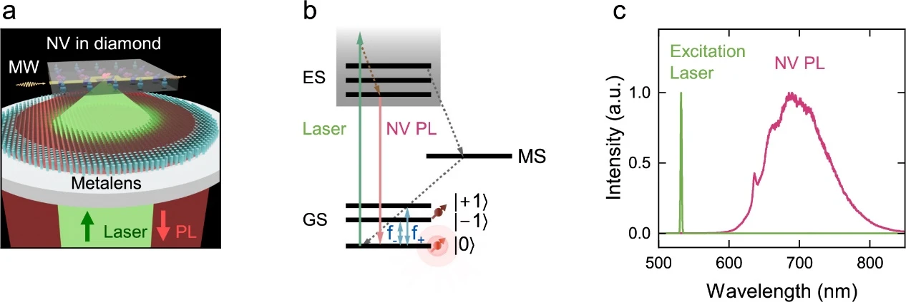
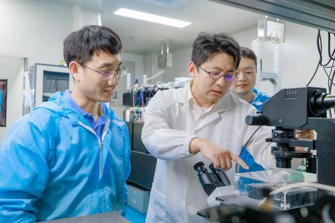
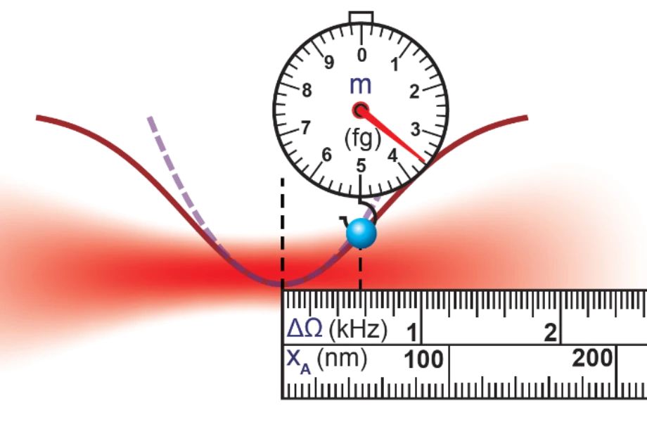
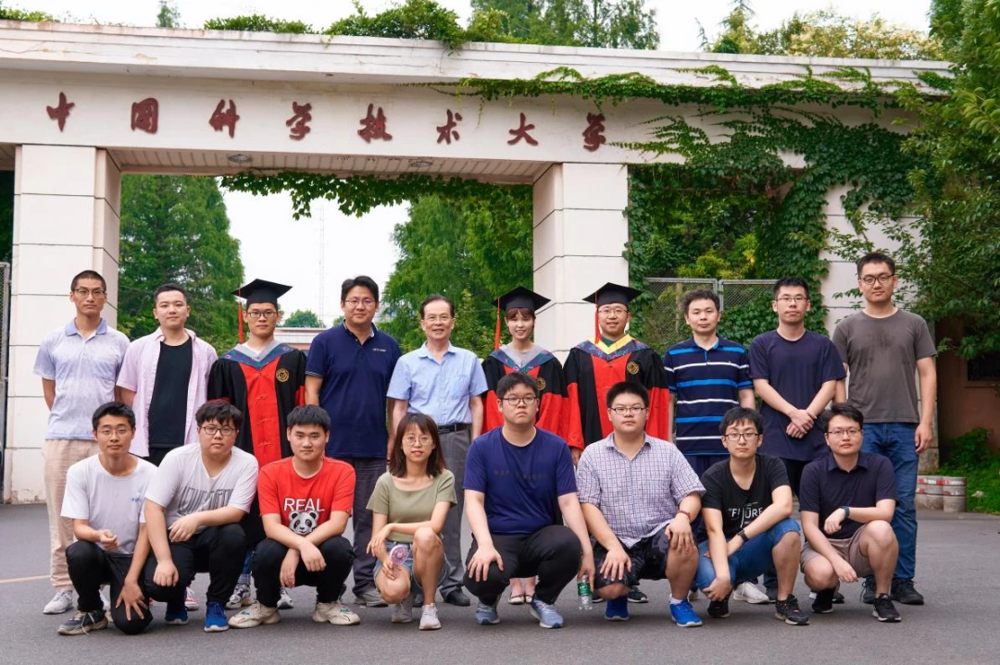

Precision at the smallest scales
Quantum sensing.
Nanoscale discovery.
Exploring the quantum world through solid-state spins and levitated nanoparticles. Advancing how we see, measure and understand the very small.
Nanoscale Quantum SensingUniversity of Science and Technology of China

From the laboratory
Latest news
What we explore
Exploring quantum sensing.
We explore new ideas in quantum sensing and quantum probes to address the challenges of measurement at micro- and nanoscales. Our research focuses on solid-state spins, levitated optomechanical systems and their interactions with the environment. We develop quantum measurement methods with high spatial resolution and sensitivity, alongside integrated sensing devices.

01
Quantum sensing & imaging
We combine optical imaging, coherent spin control and integrated devices to resolve weak signals at the nanoscale and improve the performance of quantum sensors.
Explore this direction
02
Levitated optomechanics
Using light to suspend individual nanoparticles in vacuum, we create highly isolated mechanical oscillators for precision measurement and microscopic thermodynamics.
Explore this directionMeet the principal investigator
Professor Fang-Wen Sun
Quantum optics. Quantum information. New possibilities in precision measurement.
Professor at USTC’s School of Physical Sciences and recipient of the National Science Fund for Distinguished Young Scholars.
About Professor SunResearch in print
Selected publications
Advanced Functional Materials · 2026
Imaging and Control of Magnonic Crystals Transmission Properties using Quantum Sensors
APL Photonics · 2025
High-voltage current sensing with nitrogen-vacancy centers in diamond
Applied Physics Letters · 2024
Super-resolution wide-field quantum sensing
Be part of the discovery
Let’s explore
the quantum world.
We welcome interested graduate students and postdoctoral researchers to join our work in quantum sensing and precision measurement.
